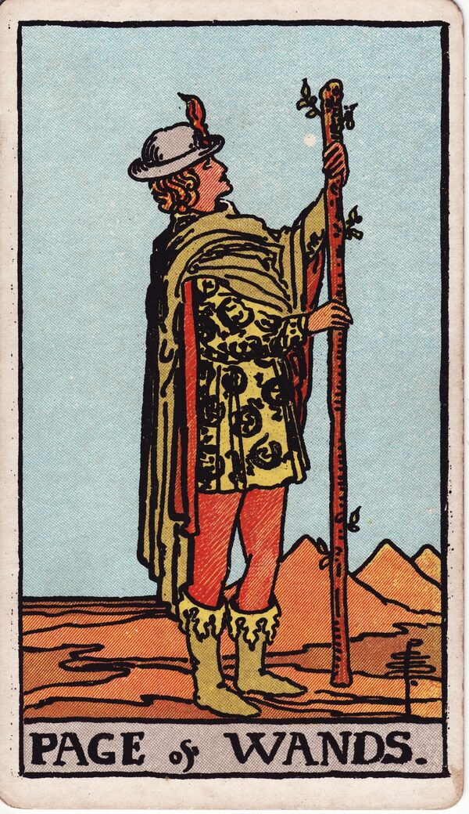

Minor Arcana · Suit of Wands
Page of Wands Tarot Card Meaning
The Page of Wands is the spark with wide eyes - curiosity, enthusiasm, and exciting news. Want to know what it means in your spread? Every reader on our line is hand-vetted - connect in under 60 seconds, $1 for your first minute, hang up anytime.
- Hand-vetted readers
- Available 24/7
- Hang up anytime

Page of Wands - What It Shows
A young figure in a bright tunic stands in a desert, holding a sprouting wand and gazing up at it with open curiosity. Salamanders - symbols of fire and transformation - decorate the clothing. The Page is the student of the suit: not yet skilled, but lit up with interest and ready to chase the next exciting thing. It's beginnings energy with a messenger's spark.
Page of Wands Upright Meaning
Upright, the Page of Wands is enthusiasm, exploration, and good news on the way. A fresh idea grabs you, a message or opportunity arrives, or you feel the pull to try something new just to see where it goes. It favours playful experimentation over a rigid plan - follow the curiosity.
Page of Wands Reversed Meaning
Reversed, the spark scatters. All talk and no follow-through, restlessness without direction, immaturity, or news that's delayed or disappointing. It can mean a fun idea that never gets off the ground because the energy keeps jumping elsewhere.
Page of Wands as a Person
As a person, the Page of Wands is youthful in spirit (any age): enthusiastic, adventurous, charming, a little restless. Often a free spirit, a creative beginner, or the bearer of exciting news. In some readings the "Page" literally is a message rather than a person.
Page of Wands in Love & Relationships
In love, the Page of Wands is flirtation and fresh spark - playful messages, the fun early phase, someone exciting but not yet deep. Example: a caller unsure if a new match was serious drew the Page of Wands; the read framed it as genuine, exciting interest in an early, exploratory stage - enjoy it for what it is rather than rushing it into something heavier.
Page of Wands in Career & Money
For work it's a new interest, a learning phase, or an exciting opportunity to explore. Example: someone considering a course in a new field pulled this card; the message was encouragement to pursue the curiosity - the Page learns by doing, not by waiting until it feels certain.
Page of Wands as Advice
As advice: follow the spark and stay curious - but pair the enthusiasm with at least one concrete first step so it doesn't evaporate.
What People Ask About the Page of Wands
Common questions readers hear about this card:
"Is it a person or a message?"
Either - an enthusiastic young-spirited person, or exciting news/contact.
"Page of Wands as feelings?"
Excited, intrigued, flirty, 'curious about you' energy.
"Does it mean a fling?"
Often an early, playful phase - not necessarily shallow, but not yet deep.
"Does the news come soon?"
It leans toward soon; surrounding cards refine the timing.
Page of Wands - Yes or No?
Upright: a yes, especially for new ventures and exploring. Reversed leans "not yet" or "not if follow-through is missing."
Page of Wands Reversed in Love & Career
Reversed, the Page of Wands deserves a closer look by area. In love, it's flirtation that fizzles, someone all charm and no follow-through, immature or hot-then-cold behaviour, or a fun spark that never becomes anything because the energy keeps jumping elsewhere. It can also be exciting news about a connection that's delayed or doesn't pan out. In career, reversed it's a promising idea that never gets off the ground, restlessness without direction, or a learning phase abandoned the moment it stops being novel. The reversed Page's pattern is enthusiasm without commitment. A live reader can tell you whether there's real substance under the spark or just the thrill of a beginning.
Page of Wands Timing in a Reading
Timing is the least precise thing tarot does, so treat this as a lean, not a date. As a fire-suit Page it tends to read soon - news, a message, or a fresh start within days to a few weeks, often arriving unexpectedly. Some readers tie it to spring. Reversed, the news is delayed or the spark fizzles before it lands. A live reader sharpens timing from the full spread and your question far better than the card alone.
Page of Wands Card Combinations
Context changes everything - a few pairings readers see often:
Page of Wands + Ace of Wands
A confirmed, exciting new beginning getting underway.
Page of Wands + Three of Cups
A social or creative invitation worth saying yes to.
Page of Wands + Knight of Wands
The early spark accelerating into bold pursuit.
Page of Wands in a Tarot Reading
A meanings page is the map; a live reading is the territory. The Page of Wands shifts with its position and the cards around it - which is what a hand-vetted reader interprets for your question. See the full Suit of Wands, all 56 cards on the Minor Arcana hub, or start a phone tarot reading.
← Ten of Wands · Next: Knight of Wands →
What Does the Page of Wands Mean for You?
A meanings list is the map; a live reading is the territory. We'll connect you with the right hand-vetted tarot reader in under 60 seconds. $1/min first call · 15 minutes for $10 · hang up anytime · 100% satisfaction promise.
Call (888) 920-6662 NowPage of Wands - Frequently Asked Questions
What does the Page of Wands mean?
Curiosity, enthusiasm, and a spark of a beginning - an exciting idea or message.
What does it mean reversed?
Scattered energy, all talk and no follow-through, or delayed news.
What does it mean as a person?
Youthful, enthusiastic, adventurous, a little restless - or a literal message.
What does the Page of Wands mean in love?
Flirtation, a new spark, and the playful early phase of attraction.
How much does a reading cost?
First-time callers pay $1/min, or 15 minutes for $10, and you can hang up anytime.
Get Your Tarot Reading Now
Connected to a hand-vetted reader in under 60 seconds, the cards pulled on your real question, and you hang up with clarity.
Call (888) 920-6662